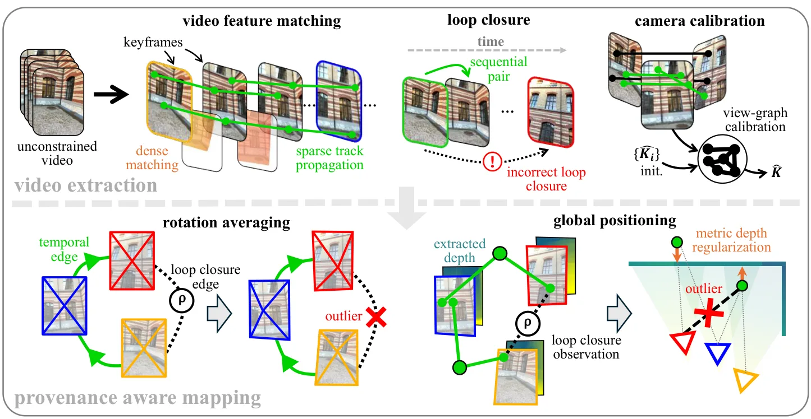
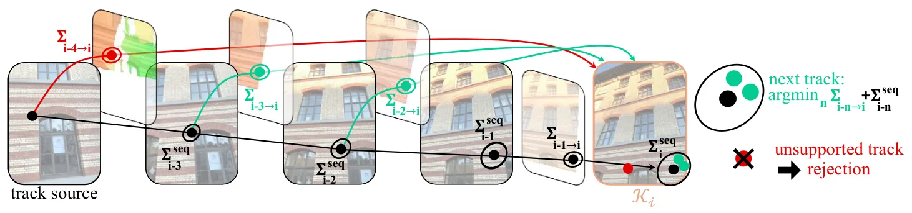
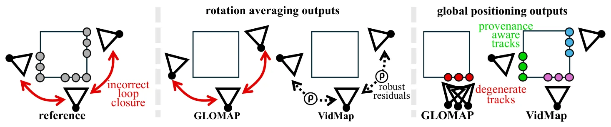
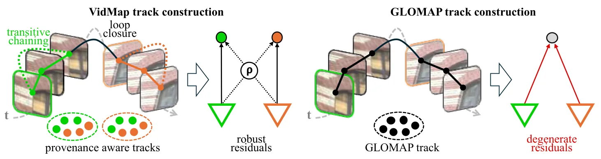

VidMap：利用时间结构的视频 Structure-from-MotionVidMap: Exploiting Temporal Structure for Video-Based Structure-from-Motion
直接命中视频 SLAM/SfM、相机自标定、闭环和 metric reconstruction 主线，且有公开代码；需核查深度尺度偏差、动态场景和超长序列资源开销。
一句话工作总结
以时序约束、宽基线稠密匹配和 metric depth prior 连接 SLAM 与离线 SfM，重建任意长、未标定视频。
摘要
为了从任意未约束视频恢复相机标定和 metric poses，VidMap 将 SLAM 的强时序约束与离线 SfM 的灵活初始化和全局优化结合。系统使用宽基线 dense image matching，将时间顺序作为可靠 loop closure 的一等信息，并用 metric monocular depth priors 增强全局优化。作者在包含极端运动和视觉对称的多类困难数据上评估，摘要称其比经典或学习式、已知或未知相机标定的 SOTA SLAM/SfM 更稳健准确，并公开代码。
Accurately recovering the camera's calibration and metric poses for any unconstrained video would unlock large-scale training data for navigation and scene understanding. The dominant approaches to this problem are severely limited: Simultaneous Localization and Mapping (SLAM) is sensitive to initialization and transient failures due to its causal, incremental nature; it is often over-optimized for real-time operation and generally requires known camera calibration; while Structure-from-Motion (SfM) typically forgoes any image ordering, enabling optimal initialization and global optimization, but lacks robustness to visual symmetries and extreme motions. To bridge this gap, we introduce a system that combines the strong sequential constraints of SLAM with the flexibility and global optimization of offline SfM, enabling the metric reconstruction of arbitrary, long, uncalibrated videos. This system leverages recent advances in wide-baseline dense image matching, treats temporal ordering as a first-class citizen for reliable loop closure, and augments global optimization with metric monocular depth priors. As a result, thorough evaluations on diverse, challenging datasets that exhibit extreme motion and visual symmetries reveal that our approach is significantly more robust and accurate than both state-of-the-art SLAM and SfM, classical or learned, with given or unknown camera calibration. The code is publicly available at https://github.com/cvg/vidmap.
中文解读摘录
- 作者：Zador Pataki, Paul-Edouard Sarlin, Marc Pollefeys
- 价值判断：今日最贴近 SLAM/SfM 主线的系统。它保留离线 SfM 的灵活初始化与全局优化，同时把视频顺序用于可靠 loop closure，并借助 metric monocular depth prior 恢复未标定长视频的 metric poses。
- 结果与边界：摘要称在极端运动和视觉对称数据上，比经典或学习式 SLAM/SfM（已知或未知标定）更稳健准确，代码已公开。需细查深度先验的尺度偏差、rolling shutter、动态场景、超长序列资源消耗及失败率统计。
- 链接：arXiv · PDF · 代码
图表/页面预览

{kind=link}

{kind=link}

{kind=link}

{kind=link}
